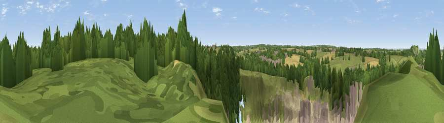

Viewpoint near Worthington
#33234 in England · top 66% of its area beats it · near WorthingtonThe view, rendered

A 360° render of this exact spot computed from the terrain model, tree cover and land cover — summer colours, afternoon light, calibrated against photographs of famous viewpoints. Real trees, hedges and buildings will differ in detail.
The panorama
Grey silhouette: terrain skyline in each direction (720 bearings, Earth curvature and refraction included). Dashed green: skyline with trees (+15 m) and buildings (+8 m) as obstacles. Blue strip: how far the ground is visible on each bearing.
Where the view opens
Wedge length = distance to the farthest visible ground on that bearing (vegetation-aware). Rings at 10, 25 and 50 km.
What fills the view
25% bare ground · 23% built-up · 21% woodland · 20% grassland · 8% cropland · 2% water
Angular shares of the visible panorama (visual magnitude), not map area. Landscape diversity 0.71 (0–1 Shannon).
Key numbers
More beautiful places nearby
The staircase of upgrades: each row has a higher view potential than everything closer. Driving times are estimates from straight-line distance, calibrated against real road routing — check an actual route before setting out.
| Place | Direction | Drive | Score |
|---|---|---|---|
| Breedon Hill | NNW · 2 km | ~6 min | 57.9 |
| Viewpoint near Whitwick | SSE · 5 km | ~11 min | 63.6 |
| Viewpoint near Whitwick | SE · 5 km | ~12 min | 71.2 |
| Ives Head | SE · 8 km | ~16 min | 73.3 |
| Viewpoint near Stanton under Bardon | SSE · 9 km | ~18 min | 76.0 |
| Viewpoint near Woodhouse Eaves | SE · 12 km | ~22 min | 77.7 |
| Viewpoint near Mow Cop | WNW · 66 km | ~89 min | 80.2 |
| Viewpoint near Little Wenlock | W · 79 km | ~103 min | 84.2 |
52.78747, -1.38720 · source: screening · position refined by local search. Computed location — check access rights before visiting.